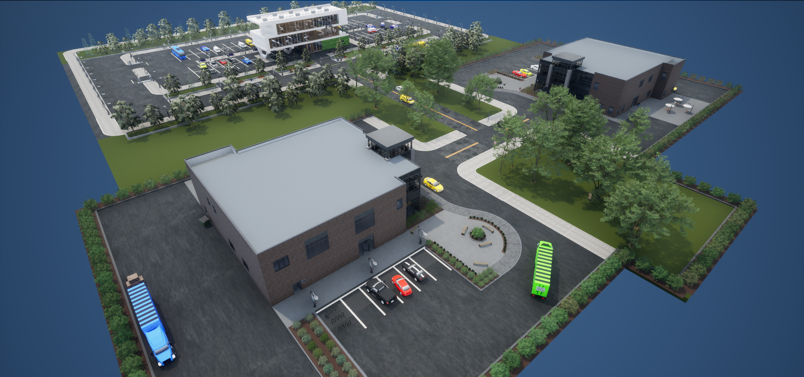
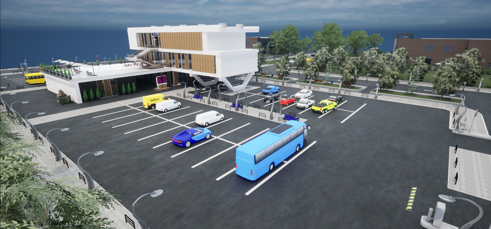
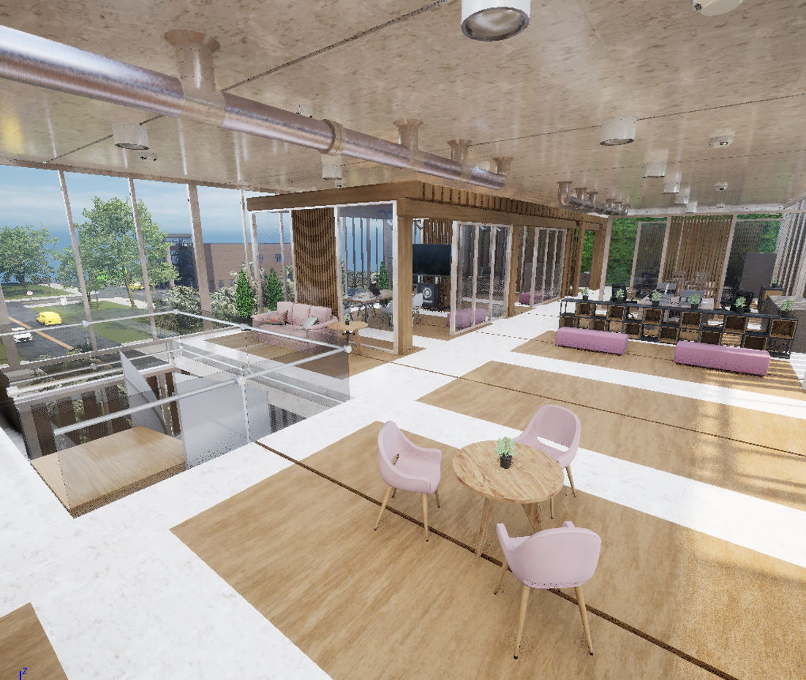
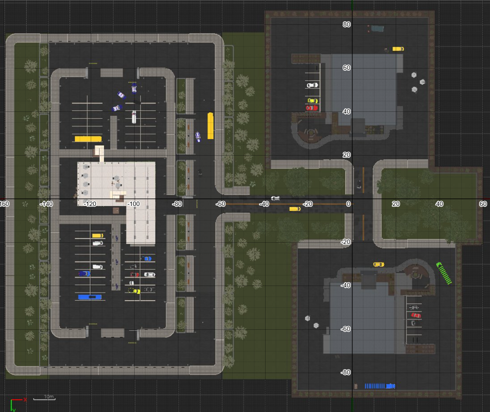
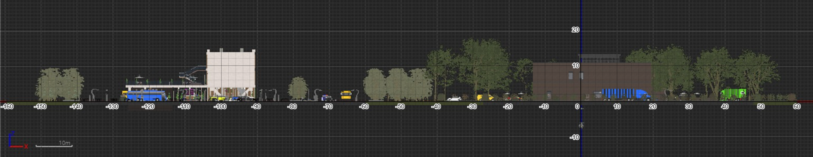

商业园区（BusinessCampus）

商业园区环境的面积约为 200 米 x 200 米，其中有 3 栋建筑，所有建筑的内部都可以进入查看。关卡中的物体都带有语义标签，可以配合语义分割相机和Raycast 语义激光雷达传感器使用。


HoloOcean 中的坐标与虚幻引擎编辑器中显示的坐标不同。下面两张图标注了商业园区关卡在 HoloOcean 中的坐标。


语义标签
该关卡使用以下语义标签（完整的标签列表见添加自定义语义标签）：
| 文件夹名字 | 模板值 | RGB 值 |
|---|---|---|
| None（无） | 0 | {0, 0, 0} |
| Landscape（景色） | 4 | {153, 153, 153} |
| Trash（垃圾） | 24 | {107, 156, 137} |
| Grass（草） | 25 | {91, 235, 52} |
| Asphalt（沥青） | 26 | {79, 82, 77} |
| Bench（长凳） | 27 | {212, 191, 125} |
| BikeRack（自行车架） | 28 | {209, 208, 203} |
| Building（建筑物） | 29 | {31, 240, 205} |
| Bus（公共汽车） | 30 | {240, 220, 43} |
| Bush（灌木） | 31 | {177, 247, 124} |
| Car（汽车） | 32 | {224, 109, 237} |
| Ceiling（天花板） | 33 | {161, 247, 233} |
| Chair（椅子） | 34 | {65, 13, 255} |
| Cone（圆锥体） | 35 | {255, 169, 10} |
| Crate（板条箱） | 36 | {140, 86, 0} |
| Desk（书桌） | 37 | {242, 65, 224} |
| Dumpster（大垃圾桶） | 38 | {0, 138, 14} |
| FireHydrant（消防栓） | 39 | {255, 0, 0} |
| Floor（地板） | 40 | {2, 125, 104} |
| GarbageCan（垃圾桶） | 41 | {0, 184, 92} |
| Pallet（托盘） | 42 | {143, 129, 6} |
| ParkingGate（停车门） | 43 | {222, 164, 177} |
| PatioUmbrella（庭院遮阳伞） | 44 | {195, 0, 255} |
| Railing（栏杆） | 45 | {242, 97, 130} |
| SemiTruck（半挂式卡车） | 46 | {124, 6, 138} |
| Sidewalk（人行道） | 47 | {232, 232, 232} |
| SpeedLimitSign（限速标志） | 48 | {222, 218, 245} |
| StopSign（停车标志） | 49 | {250, 37, 62} |
| StreetLamps（路灯） | 50 | {255, 149, 10} |
| Table（桌子） | 51 | {186, 17, 169} |
| Tree（树） | 52 | {69, 99, 46} |
| Wall（墙） | 53 | {126, 60, 250} |
| Unlabeled（未贴标签） | 54 | {0, 0, 0} |
| Any（任何一个） | 255 | {255, 255, 255} |